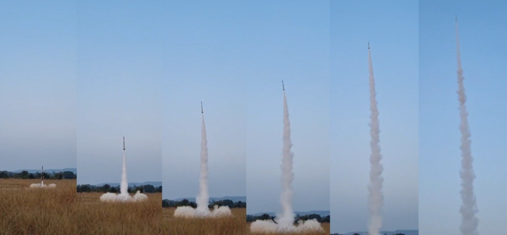
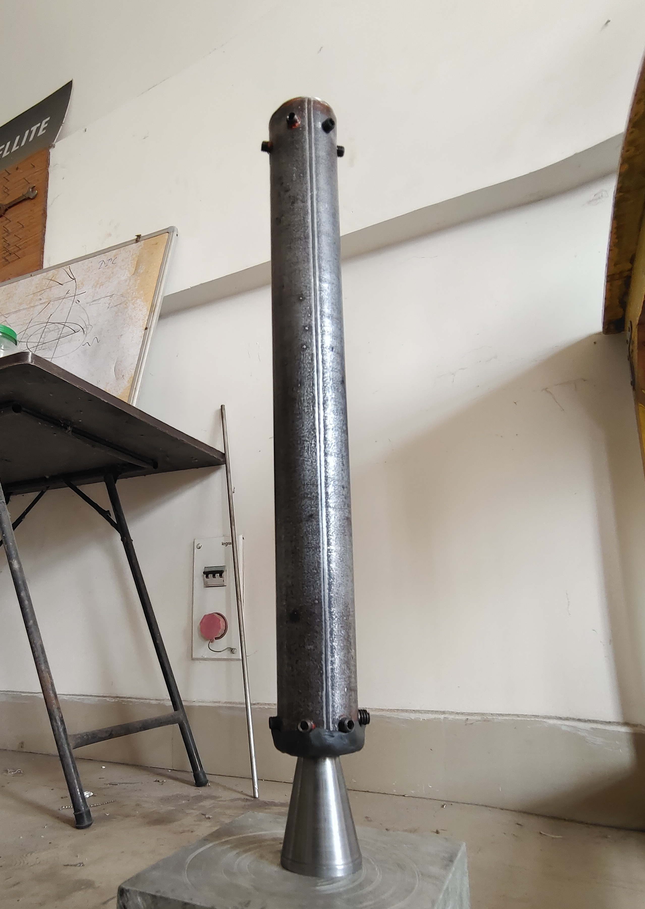
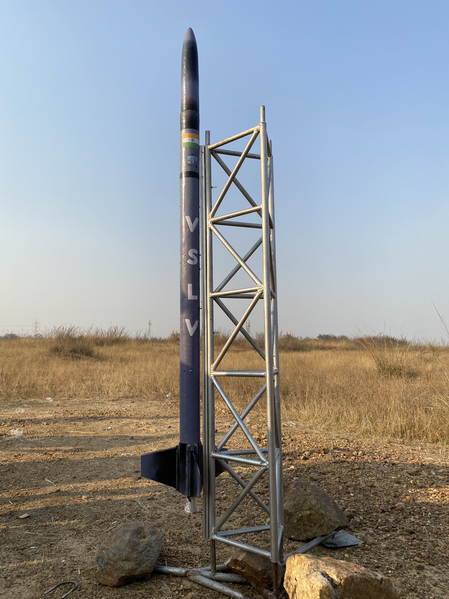

VSSUT Satellite Launch Vehicle: An MoU with ISRO
My Experience in the Propulsion Domain
VSLV was one of the most ambitious engineering projects I was involved in during my undergraduate years. Developed as a student rocketry initiative with an MoU with the Indian Space Research Organisation (ISRO), the project provided an opportunity to work on a real-world aerospace system where mechanical design, electronics, embedded systems, power management, communication, control, and systems engineering had to work together. What made the project particularly valuable was that it was not simply about building a rocket. It was about engineering a reliable vehicle to deploy a PicoSAT payload to a target altitude of 1.34 km for real-time monitoring of the Hirakud Dam. My involvement was primarily centered around the propulsion domain, giving me practical exposure to solid-fuel formulation, thermodynamics, motor fabrication, static testing, and the massive challenges associated with designing chemical propulsion systems for a demanding aerospace environment.
During my tenure as Head of Propulsion at the Veer Surendra Sai Space Innovation Center (VSSSIC) from January 2023 to January 2024, I had the opportunity to lead a 13-member team on VSLV. My contributions to the project were centered around the development of the solid-fuel engine and system-level integration. I was actively involved in propellant formulation, where the focus was on building a highly reliable energy source capable of sustaining flight under immense dynamic pressures. This included researching fuel-oxidizer ratios, ensuring robust combustion, and maintaining structural stability of the motor casing. A significant part of my work revolved around executing iterative static test fires, utilizing load cells and DAQ (Data Acquisition) systems to log precise sensor data. This required processing the data in MATLAB to plot thrust-time curves and optimize our parameters for peak performance.
A student rocket development project begins with a mission objective and gradually evolves into a collection of interconnected subsystems. The overall architecture can be viewed as a combination of: Structural and mechanical systems Propulsion Avionics Electrical power systems Sensors and instrumentation Communication Embedded control and data acquisition Ground-support infrastructure The challenge is that none of these systems can be designed completely independently. A change in the propellant formulation affects the thermal load on the mechanical structure. Motor casing dimensions influence electronics packaging. Thrust vibrations affect sensor measurements and battery distribution. Similarly, the propulsion system relies heavily on the avionics team to trigger ignition safely and log flight data. This systems-level perspective was one of the most important lessons from the VSLV project.
1. Vanadium
This was the first-ever student-led rocket that I worked on in the year 2022, guided by my seniors and professors. It was named "Vanadium" because of its atomic number, 23, representing the passing-out batch of 2023 who were leading the project at the time. I was a very new face in the team at that time, and I had the opportunity to work on basic solid propulsion concepts and motor design. The propulsion system forms the beating heart of a rocket. Chemical energy must be converted into kinetic energy safely and efficiently. Working with solid propellants introduced me to the practical difference between theoretical chemistry on a whiteboard and developing an engine that has to operate as part of a complete launch vehicle. Propellant grains, thermal liners, nozzle geometry, ignition mechanisms, and pressure vessels all have to operate reliably together. This required meticulous attention to issues such as burn rates, caramelization temperatures, nozzle erosion, combustion instability, and managing extreme pressure buildups. The experience strengthened my foundation in chemical engineering and heavily influenced my later academic trajectory into advanced thermodynamics and transport phenomena.
2. Random
This was the second rocket that I worked on, in the following year, 2023. It was named "Random" completely out of fun, because I remember someone shared the Moon Knight meme, "Random BullSh*t Go!!", and it kind of stuck with the team at the time. I learned a lot during that phase, diving much deeper into ballistic evaluation and iterative testing. One of the biggest challenges in an aerospace propulsion project is achieving an optimized thrust profile. A chemical mixture might burn well in the open, but fail violently inside a pressurized chamber. For this reason, we had to systematically test and refine. My team formulated over 15 to 16 different variations of potassium nitrate-sucrose (KNSU) solid propellants. We moved from small-scale burn tests to fully integrated, DAQ-monitored static test fires. Testing required thinking deeply about failure modes and data integrity. What happens if the propellant grain cracks and increases the burn area? What happens if the nozzle throat erodes too quickly? How accurately is our single-point load cell measuring the force? Are we filtering out the electrical noise from our DAQ system properly before taking the data into MATLAB? These questions shifted the engineering mindset from simply asking "Does it burn?" to asking "How efficiently does it burn, and how can we mathematically prove its reliability?"
3. Chromakrut
The VSLV project was also valuable because it introduced the realities of collaborative engineering. A rocket cannot be developed by one discipline working independently. Mechanical, electrical, electronics, software, and propulsion teams have to coordinate their designs and interfaces constantly. Our propulsion parameters directly dictated the aerodynamic stability margins and the structural stress limits the vehicle would face. This created a strong need for documentation, version control, testing procedures, and clear communication between domains. Through rigorous MATLAB analysis of our static test curves, we ultimately validated a peak thrust of 456N. The association of the project with an ISRO MoU also provided an important academic and technical context, giving the project a connection to India's broader space-technology ecosystem. The most important outcome of the project was not a particular chemical mixture or motor casing; it was learning to think about engineering systems as integrated architectures. A load cell is not just a sensor; it is the validator of our chemical formulation. A motor casing is not just metal; it is a precisely engineered pressure vessel interfacing with the airframe. And a rocket is not simply a propulsion system; it is a tightly integrated combination of mechanical, electrical, computational, communication, and control systems. This systems perspective has continued to influence my subsequent work in chemical engineering, petroleum science, and intelligent engineering systems.


